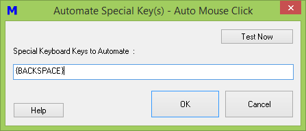

With Special Keys Action, you can Add Functionality to Automate almost any Keyboard Key from within Auto Mouse Click. The Special Keys Action in Auto Mouse Click needs .NET 2.0 or later to work. In case you wish to Automate Typing of only Alpha Numeric Characters, you can use the Type Comment Action which is much faster than this Special Keys Action.

Lets' say you wish to press the Backspace Key on your Keyboard from within the Auto Mouse Click Script. In order to Automate Backspace Key from within your Macro Script, follow the given below steps. You can also find Video Tutorial for the given below steps on the Auto Mouse Click Video Tutorials page.
You can also Combine Special Keys with other Keyboard Keys as given in the examples below.
Given below table displays a list of special keys which you can automate with Special Keys Action of Auto Mouse Click Software Utility for Windows.
| Key Combination | Text for Key Combination |
|---|---|
| Backspace | {BACKSPACE}, {BS}, or {BKSP} |
| Break Key | {BREAK} |
| Simulate Caps Lock | {CAPSLOCK} |
| Press del or Delete Key | {DELETE} or {DEL} |
| Press Down Arrow Key | {DOWN} |
| Press left Arrow Key | {LEFT} |
| Press Page Down | {PGDN} |
| Press Page Up | {PGUP} |
| Press Print Screen Key | {PRTSC} |
| Press F1 to F16 Key Combinations | Use {F1},{F2},....{F16} |
| Press Tab | {TAB} |
| Press Escape Key | {ESC} |
| Press Enter | {ENTER} or ~ |
| Press Shift Key | + |
| Press Ctrl Key | ^ |
| Press Alt Key | % |
| Press Alt + Tab | %{TAB} |
| Press Alt + Tab + Tab | %({TAB}{TAB}) |
| Press Ctrl + C | ^C |
| Press Ctrl + V | ^V |
| Shift + F10 to Invoke Right Click on Selected | +{F10} |
| Plus Sign | {+} |
| Percentage Sign | {%} |
| Example A{+}B{%} will Actually Type | A+B% |
| End Key | {END} |
More Sophisticated Auto Mouse Clicker is available which offers more features.